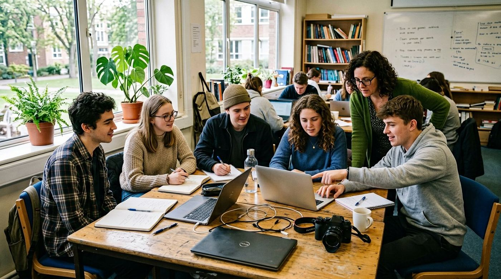

Свежие материалы
Тексты, репортажи, фотоистории и подкасты авторов из регионов. Всё написано участниками проекта — или теми, кто только готов ими стать.
В чём можно попробовать себя
Начинать не обязательно с большого текста. Подойдёт любой формат, в котором вам интересно разбираться.
Истории с мест
Медиа, школа и сообщество в одном месте
«Смена контента» задумана как пространство, где молодые люди учатся делать материалы, получают обратную связь от редакторов и публикуют истории о своих городах и регионах.
Сейчас проект на стадии запуска: есть идея, структура и этот сайт. Команду, редакцию и медиашколу ещё предстоит собрать — и мы открыто об этом говорим.

2 месяцапрактикис обратной связью
Учимся на реальных материалах, а не на лекциях
Программа строится вокруг задачи: есть тема, срок и редактор. Участник делает материал, получает разбор и делает следующий — уже лучше.
- 01Текст и фактураСтруктура, заголовки, работа с источниками
- 02ИнтервьюВопросы, подготовка, расшифровка, этика
- 03Фото и видеоСъёмка, свет, отбор кадров, монтаж
- 04Соцсети и дизайнКак материал живёт за пределами сайта
- 05Проверка информацииФакт-чекинг, работа с фото и данными
- 06РедакцияПланирование, дедлайны, разбор номеров
Что уже сделано и что впереди
Проект молодой: мы не хотим изображать готовое медиа. Вот честная карта движения.
Основа
Идея, позиционирование, структура сайта и дизайн.
Команда
Ищем авторов, редактора, наставников и координатора.
Первые материалы
Реальные истории из регионов вместо демо-текстов.
Пилот
Запуск медиашколы и набора участников в одном регионе.
Партнёры
Договорённости с вузами, молодёжными центрами и СМИ.
Грант
Заявка на конкурс с планом, бюджетом и результатами.
География
Новые регионы, региональные команды, сотрудничество с Беларусью.
Устойчивость
Свои рубрики, партнёрские проекты, домен и нормальный хостинг.
Нам нужны люди, которым есть что рассказать
Автор, фотограф, видеограф, редактор, наставник или партнёр — на старте мы готовы обсуждать любые форматы участия. Опыт публикаций не обязателен.
С кем мы хотим работать
Вузы и колледжи
Практика для студентов профильных направлений и совместные проекты.
Молодёжные центры
Площадки для занятий, набор участников, совместные мероприятия.
Редакции СМИ
Наставничество, стажировки, обмен опытом и материалами.
Медиашколы
Совместные программы обучения и методические материалы.